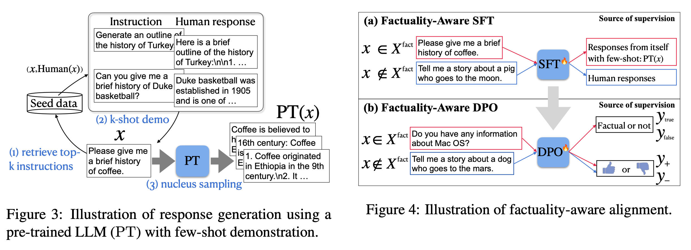

Current game design models
As the gaming industry has progressed, many attempts have been made to formalize and simulate games’ internal structures, especially in the field of “serious” and educational projects. Each of these models deserves to exist and serves their purpose. However, we should bear in mind that a particular model may not be suitable for your particular case.
Before we take a look at my game design model, here are some examples of formalized game mechanics with some explanation and links to further information:
The MDA framework — mechanics-dynamics-aesthetics. A game designer creates rules — “mechanics”; these rules start working in the game and start generating some kind of “dynamics”, which, in their turn, have an emotional impact on the player, and this is called “aesthetics”.
The PENS framework — The Player Experience of Need Satisfaction model outlines three basic psychological needs: competence, autonomy, and relatedness, that lie at the heart of player fun, enjoyment, and the valuation of games.
Machinations framework — Game Mechanics: Advanced Game Design is a great book, and I highly recommend it. The authors have created an entire graphic language to help you sort out any game mechanics.
Björk and Holopainen’s Patterns in Game Design is an extensive library of game mechanisms with many examples.
SSM — The System, Story and Mental Model. In this model, the author links mechanics (system), narrative (story) and what happens in players’ heads during their interaction with mechanics and narrative (mental model).
Lens of Intrinsic Skill Atoms — turned out to be the closest thing to what I wanted to talk about in my article. The authors consider the gameplay from the atomic elements point of view — skill atoms. What happens in the player’s head during the game?
6–11 framework — this model suggests analyzing games in terms of their influence on 6 key human emotions and 11 basic instincts.
Keep in mind that, while it’s important to know about the ways other people formalize game mechanics, their models may not be very applicable to your own experience. Each model is a mental pattern in someone’s brain that helps them make decisions. But this model is unlikely to work as well in a different person’s brain.
So, the usual process is like this: someone accumulates knowledge, learns about someone else’s experience, then with all this in mind, comes up with their own highly personal model. And only once a personal, workable model has been created, do they see positive results.
Hence, a warning: what I describe next is a model of my own devising. It may not suit you, and this is completely normal. However, some information here can help modify or improve your personal model, this being the purpose of the article, in general.
Game model bonuses
So, speaking of creating a game model, what would we ideally want from it?
It should help us define principles that can be used to solve design problems.
It should also help us come up with principles which can help us solve design problems.
To provide a simple game analysis algorithm that makes it easier to understand what is good in a game and why.
The ability to segment individual parts of the game and analyze them separately: “Are these mechanics good or not?”.
It should provide criteria for evaluating the quality of the game and its individual parts in order to answer the question “What is a good game?”.
Possibility to derive a methodology for the synthesis of game mechanics: “How to make a good game?”.
High predictivity of the model. If the model allows us to form useful criteria for product quality, we will be able to create good game loops already at the design/concept stage, or at least identify what is clearly not going to work. This will help speed up development, reduce the number of iterations, and generally increase the chances of success.
Let’s try and build a game model
First off, let’s try to think of each game we’ll deal with like some kind of a black box. Players somehow interact with the box, applying mental or physical “effort” in the process. If the game is good, the player is satisfied (although, the definition of this “satisfaction” is beyond the scope of this article.)
For now, we’re more interested in the structure of our black box. How exactly do the players interact with it? What actions do they take?
When interacting with a game, players repeatedly go through a cycle of actions, sometimes consciously, sometimes not. This is called a “game loop” and we can break it down into steps:
Current game state assessment
Current goal realization
Multiple available actions assessment
Development of actions set to achieve the goal, i.e., choosing a strategy (or making a decision)
Planned actions implementation
Receiving feedback through the game state change
Return to the loop start
The primary (but not the only) sources of interest and satisfaction here are the stages of choosing and implementing a strategy — it’s during these moments where players decide which gun to use (and against which enemy), then check their motor skills when taking aim with the help of the mouse/controller. Other stages have more of a supportive function, but are no less important. Developers can fumble any point of game loop design, leading to an overall poor game quality.
With that out of the way, let’s consider each stage of the game cycle in more detail.
Game state environment
To make decisions, first of all, the player needs to understand the current game state. How are the pieces arranged on the board? Where is the enemy? How many more cards are left in the deck? The more they know about the game state, the more advantageous strategy they can choose.
The present game state can be described by a huge number of variables, not always obvious to the players. Therefore, two processes are happening on their side, which are highly dependent on their skills:
Perception of available information about the current game state.
Interpretation of this information and then making a mental model of the game state’s important aspects. Players will make a decision based on this model.
The specific nature of the game genre sets the requirements for the response time, the attention necessary, and the ability to process and analyze incoming information. To illustrate, a shooter requires a short response time, a turn-based strategy requires more time to think.
Here, we see a clear inverse relationship: the bigger the emphasis on reaction speed and time constraint, the less important information the player is able to absorb. But what if a game loop gives players more information than obtainable in order to make meaningful decisions? In this case, the game loop becomes less attractive. Imagine XCOM with a 5 second time limit per turn. I don’t know about you, but I definitely don’t like this idea.
What should we pay attention to when designing the game state environment and distributing parameters to entities (?
Complex environment. Once, while working on a prototype, we fell into the trap of creating many equally important entities and parameters for decision making. The gameplay was based on the draft system. Each turn, the player had to choose one of the three “characters” and combine it with one of the five “machines”. The characters had several numerical parameters, the machines had even more. The characters’ characteristics depended on the combination with the machine, and even certain combinations of characters on the field gave unique effects. As a result, with each move, players had to weigh a lot of information and tap on a bunch of pop-ups with entities’ descriptions. As a consequence, players experienced a high cognitive load and dismissed the whole situation with a kind of “I don’t care” attitude.
Simple environment. That said, if it’s too simple, the set of strategies and possible reactions may not be sufficient enough. This leads to overly obvious strategies and subsequent loss of interest (hello, tic-tac-toe!).
Requirements for game state evaluating skills. The higher these requirements are, the more hardcore the game will be (XCOM in 5 seconds? No, thanks). And hardcore scares off a segment of the potential audience.
Game status information presentation. This is a matter of UI and visualization. If important information is hidden behind three nested menus in a tooltip with a mountain of extra text, there’s no way this is going to make a player’s life easier. Here, we can recall old strategy interfaces from Paradox or aspects of the sport management genre: a lot of information and screens. But accessing them is far from convenient.
Note: Hereafter, such judgments as “too complicated” or “too high requirements” are related to our target audience only: for some, tic-tac-toe will seem too simple, but for others, just right.
Player goals and moving through game state
So, our players have information about the current game state. Now they need to understand the goal to achieve (after all, without a goal there’s no point making decisions and taking actions).
In a nutshell, the players’ goal is to transfer the game state from one point in the environment to another, bringing them closer to “success” or “victory”. The goal can be set for the player and described in the rules of the game (get more frags in Unreal Tournament), or it can be defined by the players themselves (unite three kingdoms for Alfonso VI in Crusader Kings III).
Let’s digress a little and talk about the fractal nature of game cycles. It’s worth noting that the player’s action in one cycle can become a goal in another cycle of a lower order and vice versa. There are many game cycles which depend on the hierarchical structure of goals. For example, let’s consider the XCOM again, where a player has formed their own strategy:
Kill a Muton → Kill a MEC → Treat a Ranger → Kill a Sectoid
Here, “Kill a Muton” is both a goal in one cycle and an action in another, where the player already has a different goal: “to destroy a group of opponents”. This game loop can be “packed” into an even larger one with the goal “to accomplish a mission” and a set of actions such as “to destroy a group of opponents”, “to explore the building”, “to protect the transmitter”.
This game cycle model can be compared to lenses of different strengths that help examine the game at different levels. Let’s now consider Horizon: Forbidden West as another example:
Micro Level
Goal: hit a machine’s part
Action: move the mouse and click the left button
Macro Level
Goal: level up the bow
Action: get an important part from the machine
In an ideal world, all the cycles in the game are good and interesting, but in reality, this is hardly possible. Fortunately, it’s not necessary to make every game cycle perfect to create a good game. For example, large meta-cycles can rarely boast exciting solutions. What armor clothes to put on Kratos in God of War? What activities to visit first after the weekly reset in Destiny 2? Which map marker to explore next in The Witcher 3? The main interest of these games still lies a little closer to the core gameplay. So, hence the question: is it even necessary to try making a super-interesting meta-layer? Not necessarily.
What can go wrong at the goal realization stage?
The goal may not be well communicated to the player. Again, this is an issue of UI and visualization. If players don’t know what is required to win, they can either quit due to this unfortunate misunderstanding, or try to come up with a goal for themselves. For some genres and some players, this might work out, but the most frequent situation is that it doesn’t.
For example, I had certain problems with goal definition when I first started playing Elden Ring. There was no obvious and understandable goal, no one to lead me by the hand. I had to somehow figure out where to go next by myself. Not everyone likes this type of gameplay, so we just should take it into account when targeting our audience.
Difficulty in obtaining and understanding game state information. In this case, problems may arise with a hierarchical structure of goals, when at the top level, players understand what needs to be achieved, but they don’t know how to do it and where to find relevant information about it. If you’re making an RPG and plan to give the player a quest which tasks them to “find a villain”, but don’t provide any information at all, they are unlikely to figure out where to start.
Understanding and tuning player actions
So, let’s assume the players understand where their current point in the game state space is located, as well as the point they’d like to reach. The next question: “how to get there?”
Here, game designers provide players with a set of actions. By taking these actions, players move in this space of game states from one point to another. In a specific game cycle, actions are generally all the options available to players at the moment. For example, when an RPG offers players to choose a new skill from 10 options, they essentially have 10 different actions: learn about skill 1, learn about skill 2, and so on.
Moreover, there also can be continuous action spaces with a conditionally infinite number of options, for example, the character’s movement. In this case, it’s worth breaking down to a rational number of options that are more or less different from each other: there’s not much difference between “run to the right” and “run to the right-up”, if, in both cases you get hit by the enemy projectile. This can be vividly illustrated by Archero, where all control in the core cycle is reduced to a single movement stick.
Obviously, all actions can’t have equal results in the context of achieving a goal: some will help bring the player closer to success, others won’t. This brings us to the key property of the player’s actions — their relative value. Action value is a fickle thing, depending on various factors. Let’s take a look:
Current game state. If a player in a shooter notices an enemy in the distance, the “switch-to-sniper” action will be clearly more valuable to them, than a “switch-to-shotgun” one.
The player’s skill of assessing the game state. If a player notices a powder keg next to an enemy, the “switch to rocket launcher” option will definitely be more advantageous compared to others.
The player’s general knowledge about the game. As experience accumulates, the skill of evaluating different actions’ effectiveness in various situations improves. For instance, the same player eventually realizes it’s pointless to shoot with a rocket launcher, as the damage from the keg will be too small, and the enemy will have time to hide.
However, the player’s subjective understanding of action value doesn’t necessarily coincide with the true value from the game theory point of view. They may think that it is better to perform action X, while action Y is mathematically optimal.
If the true value of actions is easy to calculate, the game will quickly get boring: all decisions will become obvious, and a dominant strategy will be discovered. In this case, the game mechanics is reduced to a sport, and not the most interesting one: those who can most quickly perform all the pre-known optimal actions, win (that is, whoever is better at clicking the mouse).

To avoid accidentally distilling unknown knowledge into the model during alignment training, they suggested using the model generated responses to form SFT / DPO datasets.
Factuality tuning (Tian & Mitchell et al. 2024) also relies on fine-tuning language models for better factuality. They experimented with different ways of truthfulness estimation of atomic claims in each model sample and then run DPO
Process of factuality tuning:
- Sample pairs of model completions for a given set of prompts (e.g
"Write a bio of Yo-Yo Ma") - Annotate them with truthfulness based on two methods without human involved:
- Reference-based: check whether external knowledge base supports the model statement, similar to the above section on retrieval-based hallucination evaluation.
- (a) Extract a list of atomic claims;
- (b) Find wikipedia reference;
- (c) Use a small NLI fine-tuned model to check whether the reference text supports the atomic claim.
- Reference-free: use the model’s own confidence as a proxy of its truthfulness, similar to the indirect query approach.
- (a) Convert each claim into a corresponding question / need careful rephrase to ensure the question is unambiguous; using few-shot prompting;
- (b) Sample multiple times from the model to answer that question;
- (c) Compute the aggregated score / use string match or ask GPT to judge whether two answers are semantically equivalent.
- Reference-based: check whether external knowledge base supports the model statement, similar to the above section on retrieval-based hallucination evaluation.
- Construct a training dataset by generating multiple samples from the model and assign preference based on truthfulness scores. Then we fine-tune the model with DPO on this dataset.
Fine-tuning for Attribution
Assigning attribution in the model outputs when generating conditions on search results is a good way to reduce hallucination. There is a branch of work to train LLMs to better consume retrieved content and assign high-quality attributions.
WebGPT (Nakano, et al. 2022) combines web search for document retrieval with a fine-tuned GPT model, aiming to answer long-form questions to reduce hallucination and achieve better factual accuracy. The model interacts with the Internet search in a text-based Web browser and learns to answer with references to web pages. While the model is browsing, one of the actions it can take is to quote an extract from the current page. When this is performed, the page title, domain name and extract are recorded to be used later as a reference. The center of WebGPT is to use references to assist humans to judge factual correctness.
The model is first supervised fine-tuned on demonstrations of humans using the web-browsing environment to answer questions for behavior cloning. Comparison data is collected between two model-generated answers to the same question (each with their own set of references), where answers are judged for their factual accuracy, coherence, and overall usefulness. Reward model is used for RL training and best-of-n rejection sampling. RL training and best-of-n rejection sampling. In comparison, RL only introduces a small benefit and it is even smaller when rejection sampling is used.
GopherCite (Menick et al. 2022) is quite similar to WebGPT on using search engine to create support materials and teaching models to provide references. Both run supervised fine-tuning for bootstrapping and both apply RL training from human preference. But different from WebGPT that depends on human demonstration for behavior cloning, GopherCite generates demonstrations via few-shot prompting and each generation uses context stuffing with relevant documents and then use reward model to score which ones are the best.
One additional trick to avoid low quality response is to configure the model to decline to answer with a canned answer "I don't know", decided by a global RM threshold, known as selective prediction.
The empirical results on RL is similar to WebGPT in that RL only brings in limited improvement or no improvement when combined with rejection sampling.
Appendix: Evaluation Benchmarks
Here is a list of datasets mentioned in this post.
TruthfulQA (Lin et al. 2021) is designed to measure how well a LLM can generate truthful responses. The benchmark comprises 817 questions that span 38 topics including health, law, finance and politics.
FactualityPrompt (Lee, et al. 2022) is a benchmark consisting of both factual and nonfactual prompts. It relies on Wikipedia documents or sentences as the knowledge base for factuality grounding.
SelfAware (Yin et al. 2023) contains 1,032 unanswerable questions across five categories and 2,337 answerable questions. Unanswerable questions are sourced from online forums with human annotations while answerable questions are sourced from SQuAD, HotpotQA and TriviaQA based on text similarity with unanswerable questions.
LongFact (Wei et al. 2024 ) is designed for checking long-form generation factuality. It consists of 2280 fact-seeking prompts that seek long-form responses on 38 manually curated topics
HaDes (Liu et al. 2021) is a benchmark for hallucination detection as a binary classification task. The dataset is created by perturbing Wikipedia text and human annotation.
FEVER (Fact Extraction and VERification) dataset contains 185,445 claims generated by altering sentences extracted from Wikipedia and subsequently verified without knowledge of the sentence they were derived from. Each claim is classified as Supported, Refuted or NotEnoughInfo.
FAVABench (Mishra et al. 2024) is a benchmark for evaluating fine-grained hallucination. There are 200 information-seeking source prompts and 3 model responses per prompt, resulting in 600 responses in total. Each model response is manually labeled with fine-grained annotations on hallucination error types.
Citation
Cited as:
Weng, Lilian. (Jul 2024). Extrinsic Hallucinations in LLMs. Lil’Log. https://lilianweng.github.io/posts/2024-07-07-hallucination/.
Or
@article{weng2024hallucination,
title = "Extrinsic Hallucinations in LLMs.",
author = "Weng, Lilian",
journal = "lilianweng.github.io",
year = "2024",
month = "Jul",
url = "https://lilianweng.github.io/posts/2024-07-07-hallucination/"
}
References
[1] Ji et al. “Survey of hallucination in natural language generation.” ACM Computing Surveys (2022)
[2] Gekhman et al. “Does Fine-Tuning LLMs on New Knowledge Encourage Hallucinations?” arXiv preprint arXiv:2405.05904 (2024).
[3] Min et al. “FActScore: Fine-grained atomic evaluation of factual precision in long form text generation.” EMNLP 2023.
[4] Wei et al. 2024 “Long-form Factuality in LLMs” arXiv preprint arXiv:2403.18802 (2024).
[5] Chern et al. “FacTool: Factuality detection in generative AI - a tool augmented framework for multi-task and multi-domain scenarios.” arXiv preprint arXiv:2307.13528 (2023).
[6] Lin et al. “TruthfulQA: Measuring How Models Mimic Human Falsehoods.” ACL 2022.
[7] Yin et al. “Do Large Language Models Know What They Don’t Know?” ACL 2023.
[8] Kadavath et al. “Language Models (Mostly) Know What They Know” arXiv preprint arXiv:2207.05221 (2022).
[9] Agrawal et al. “Do language models know when they’re hallucinating references?” arXiv preprint arXiv:2305.18248 (2023).
[10] Lin et al. “Teaching Models to Learn Uncertainty in Words.” arXiv preprint arXiv:2205.14334 (2022).
[11] Gao et al. “RARR: Researching and Revising What Language Models Say, Using Language Models.” ACL 2023.
[12] He et al. “Rethinking with retrieval: Faithful large language model inference.” arXiv preprint arXiv:2301.00303 (2022).
[13] Asai et al. “Self-RAG: Learning to retrieve, generate and critique through self-reflection.” ICLR 2024.
[14] Mishra et al. “Fine-grained Hallucination Detection and Editing for Language Models.” arXiv preprint arXiv:2401.06855 (2024).
[15] Lee, et al. “Factuality Enhanced Language Models for Open-Ended Text Generation.” NeuriPS 2022.
[16] Manakul et al. “SelfCheckGPT: Zero-Resource Black-Box Hallucination Detection for Generative Large Language Models.” EMNLP 2023.
[17] Li et al. “Inference-Time Intervention: Eliciting Truthful Answers from a Language Model.” NeuriPS 2023.
[18] Chuang et al. “DoLa: Decoding by contrasting layers improves factuality in large language models.” ICLR 2024.
[19] Dhuliawala et al. “Chain-of-Verification Reduces Hallucination in Large Language Models.” arXiv preprint arXiv:2309.11495 (2023).
[20] Sun et al. “Recitation-Augmented Language Models.” ICLR 2023.
[21] Lin et al. “FLAME: Factuality-Aware Alignment for Large Language Models.” arXiv preprint arXiv:2405.01525 (2024).
[22] Tian & Mitchell et al. “Fine-tuning Language Models for Factuality.” ICLR 2024. (code)
[23] Nakano, Hilton & Balaji, et al. “WebGPT: Browser-assisted question-answering with human feedback.” arXiv preprint arXiv:2112.09332 (2021).
[24] Menick et al. “Teaching language models to support answers with verified quotes.” arXiv preprint arXiv:2203.11147 (2022).